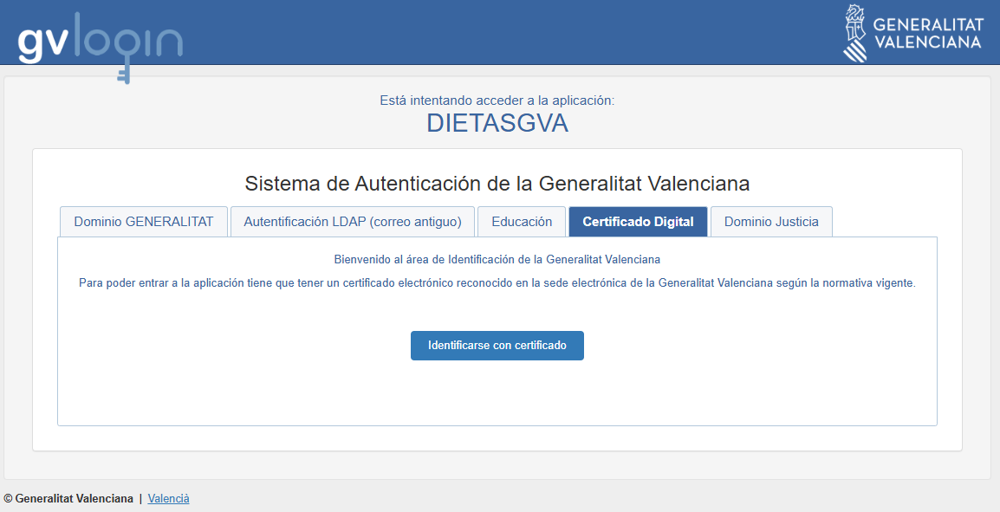
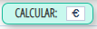
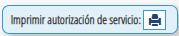
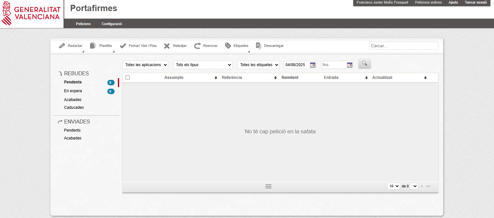
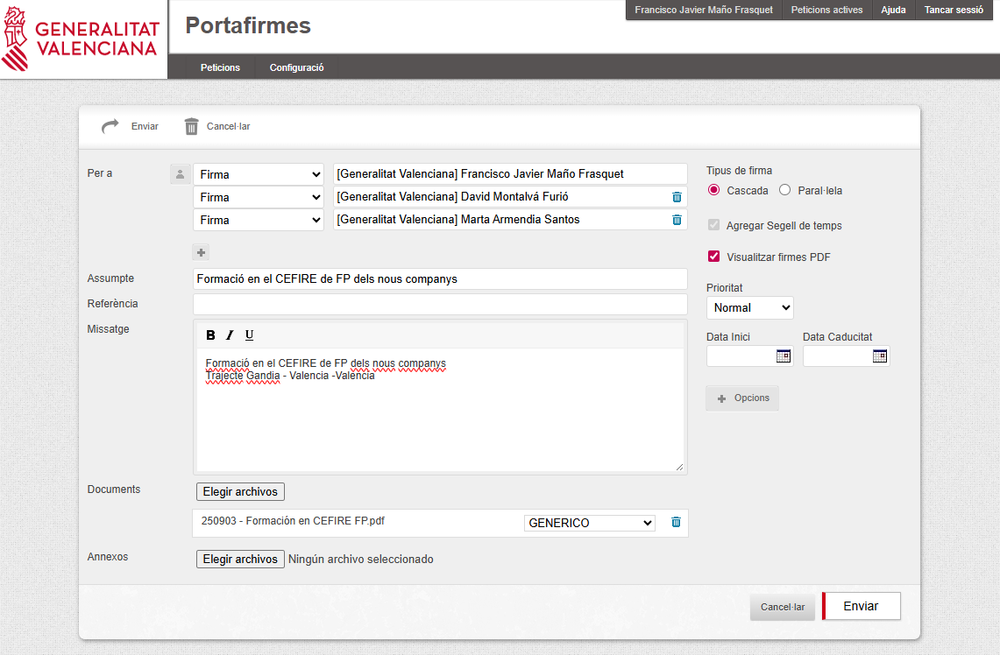

Gestió administrativa¶
La gestió administrativa és una part fonamental del treball de lassessor/a, ja que permet organitzar i tramitar correctament totes les activitats i desplaçaments relacionats amb la seva tasca professional. Aquesta secció recull informació sobre comissions de servei, dietes i despeses de desplaçament, així com els procediments i documents necessaris.
Comissions de servei¶
Què són i per a què serveixen¶
Les comissions de servei són autoritzacions temporals que permeten als assessors/des realitzar activitats fora del seu lloc habitual de treball, com ara:
- Desplaçaments a centres de FP.
- Assistència a jornades o seminaris.
- Reunions de coordinació amb altres CEFIREs o amb la DGFP.
Lobjectiu és garantir que aquests desplaçaments estiguen formalment autoritzats i comptin amb la cobertura administrativa i econòmica corresponent.
Dieta i despeses de desplaçament¶
Normativa¶
Les dietes i despeses de desplaçament es gestionen segons la normativa vigent de la Generalitat Valenciana, que estableix:
- Quantitat diria segons tipus de desplaçament.
- Possibilitat de justificar despeses de transport, allotjament i manutenció.
- Procediment de presentació de documents i justificants.
⚙️ Procediment pas a pas per a demanar una comissió de servei¶
-
Accedir a laplicació GVADietas
- Has d'estar dins de la xarxa de la GVA.
- T'has de loguejar amb el teu certificat digital. 
-
Entrar en Indemnizaciones/Comisiones y polsar buscar per a que aparega el botó de , que polsarem per a crear una nova comissió de servei.

-
Omplirem totes les dades necesaries
- s important indicar amb claretat el objecte de la comissió i el itinerari.
- Cal clicar Norm. vigente
- Una vegada introduides totes les dades (dates, vehicle, kilometres, etc..), polsarem 
- I després guardar.

-
Imprimirem la autorització polsant el botó  i ens apareixer una finestra que tindrem que omplir.
Atenció
Cada assesor/a, haur d'omplir els camps de la comissió de servei segons indique el director del CEFIRE de FP o el Cap de Servei.
-
Generarem el pdf que guardarem per a la firma abans de realitzar el desplaçament.
Recomanació
Es recomana guardar una còpia de la comissió aprovada per a qualsevol comprovació posterior.
-
Ara entrarem en el Portal de Firmes de GVA on ens loguejarem amb el certificat digital
 -
Redactem una nova petició
- En missatge hem de detallar clarament el motiu de la comissió de servei
- En firma, deurem de possar les persones que ens han de signar la comissió. Normalment, la signatura anir en cascada
- En documents, pugem el pdf de la comissió que hem generat abans
- Una vegada estiguen tots els camps plens, l'enviem per a signar

-
S'obri una nova finestra on seleccionarem el nostre nom y polsarem finalitza
-
Una vegada ja ens hagam desplaçat haurem de demanar la dieta → Seguent apartat
⚙️ Procediment pas a pas per a demanar una dieta¶
PER A COMPLETAR
Preguntes freqüents¶
-
Què faig si canvio la data del desplaçament? Cal modificar la comissió existent a laplicació i enviar-la novament per a aprovació.
-
Puc fer una comissió per més dun dia? Sí, sempre indicant les dates exactes i el motiu per cada jornada.
-
Quins documents he de conservar? Sempre guardar còpia de la comissió aprovada i dels justificants de despeses.